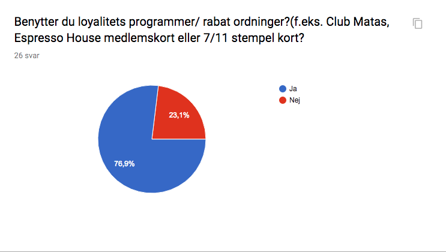
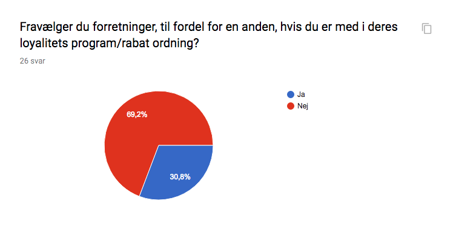
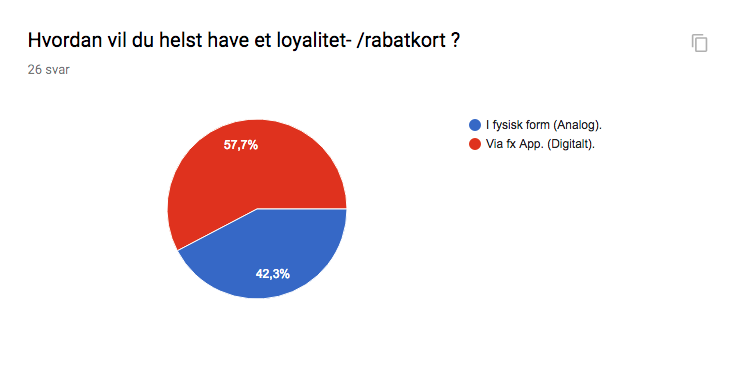
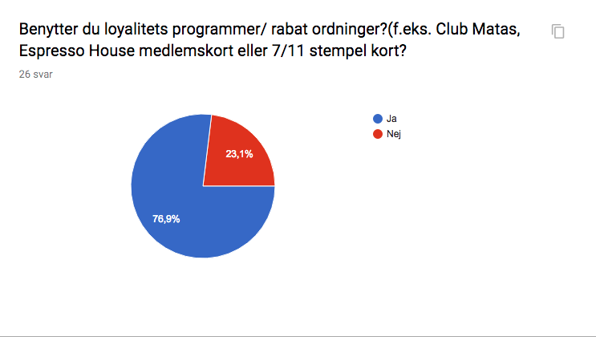
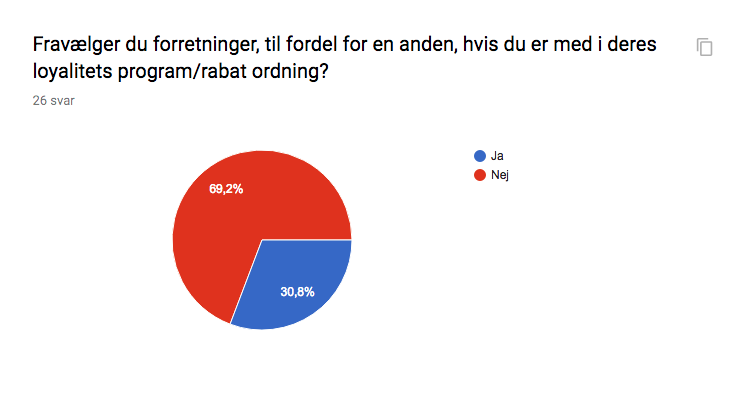
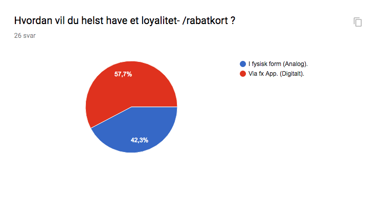

Hvilke fordele forventer du at få igennem en rabat ordning eller et loyalitets program?
Rabatter, %, et eller andet gratis en gang i mellem, måske en smagsprøve eller noget på et nyt produkt.
Få nogle %'er eller få fx hver 10.ende gratis.
Besparelser eller andre gratis ting.
Enten point i forbindelse med køb, som man bruger som valuta til virksomheden, eller rabat ved køb.
Pointoptjening eller rabat på køb - en økonomisk fordel ved medlemsordningen.
Det afhænger af, hvad det er til, men evt. hver 10. juice gratis, 25% rabat på køb eller andre rabatordninger eller kampagner.
Væsentlige tilbud - ikke sådan noget 5%.
Noget der batter noget ikke bare rabat på 1%.
En form for fordelsordning. Måske hver 5 - 10 kop gratis.
Ville du investere et større en-gangs beløb for at få en større rabat og flere foredele på længere sigt? Begrund dit svar.
Hvis det er noget jeg er sikker på at få brugt, så ja. Hvis jeg er usikker på om det vil blive brugt, så nej.
Jeg syns rabatten dør lidt. Der skal lige pludseligt et større arbejde til for mig som kunde. Virker mere som en klausul fra forretningen at de ikke kan få kunder uden at de skal investere før de får rabatten.
Det kommer an på hvor ofte jeg bruger stedet, hvis jeg bruger det dagligt så ja.
Nej, syntes det er federe at opnå større rabatter afhængigt af hvor meget man handler et bestemt sted.
Ja, hvis ordningen er favorabel nok, og det var en forretning jeg regelmæssigt bruger.
Nej, pengene står altid bedre på end egen konto.
Nej, jeg vil ikke investere i en specifik rabatordning, da jeg fortsat holder af frit at vælge hvor jeg har lyst til at handle uanset rabat.
Hvis jeg er helt sikker på, at jeg vil benytte produktet / servicen i lang nok tid, til at kunne tjene engangs beløbet ind, så ja.
Ja, hvis det var en butik/sted hvor jeg vidste jeg ville komme en del gange, fx dagligvarebutikker. Altså det nytter jo ikke man giver penge til en butik man ikke regner med at besøge igen.
Muligvis, men det kommer klart an på hvad det drejer sig om. Hvis det ikke er noget jeg har brug for, så giver det ikke mening.
Nej — for jeg ved, at jeg ikke får brugt det nok til at kunne tjene sig selv hjem.
Nej. Jeg vil kun være med i loyalitetsprogrammer, der er gratis.
Du står i en butik. f.eks. Joe & The Juice, Espresso House, Lagkagehuset, Emmerys, 7/11. Du finder ud af at de har en App. Hvilke funktioner/fordele forventer du af denne App?
Daglige tilbud. Promotions. Klippe kort fx. Download app og få tilbud.
Kæmpe pas, hvis jeg skal gide og hente den skal der godt nok være en stor upside.
Informationer om lokationer, tilbud og evt en oversigt over hvad de tilbyder af Produkter.
Overblik over produkter/ydelser, nyheder, kontaktinformation og evt. oversigt over, hvilke produkter/ydelser, der er på udsalg.
Dag til dag tilbud, rabatter, point optjening.
En form for rabatordning. Et sted hvor jeg kan se ugens tilbud eller andre brugbare oplysninger.
Forkøb (således kø kan skippes) , "menukort" evt. Med yderligere information om produkterne.
En rabat ordning, som fx køb syv nr. otte er gratis.
At den kan fortælle om åbningstider, nærmeste butikker, sortiment og specielle rabatter.
Butiksoversigt, priser og kundefordele.
Jeg forventer der er produkt info, alt hvad de sælger og hvad det indeholder. En oversigt over butikker og åbningstider. En form for fordels ordning, måske rabatkort eller månedens tilbud. (:
Køb 9 kopper kaffe og få den 10. gratis.
At kunne betale, få svar på mine spørgsmål angående produkter, allergener og sundhed.
Beskriv en god service oplevelse du har haft eller selv givet?
Det eneste man behøver for at give mig god service er at sige hej når man kommer ind i butikken, og ellers bare være positiv.
Når jeg handler i buble-Tea og vil købe en drik så har jeg mit stempel kort digitalt . Hvilket er dejlig let at jeg ved hvor det er og ikke mister det.
Jeg får tit rabat på mit stamværtshus, gratis shots eller lignende. Det gør at jeg bliver ved med at komme samt at de selfølgelig er hyggelige bag baren.
Syntes bare det er fedt når man kan mærke at den man bliver betjent af yder lidt ekstra for at give en god service/oplevelse.
På espresso House, hvor jeg oplevede relevant og interessant vejledning i forhold til både pris og varianter. Samt lidt kækhed fra personalet, hvilket løfter oplevelsen
Service omhandler sjældent prisen. Derfor er den bedste oplevelse altid en god sælger eller lign., der er høflig.
Hvis folk er søde grinene og smilene er det vel altid en god oplevelse.
At blive spurgt ind til om jeg er medlem for at gøre opmærksom på at jeg kan spare noget.
Det kan altid koges ned til venlig betjening. Alt andet kan være noget så dårligt, men hvis sælger er venlig, rar, ikke for højrøvet men virker ægte og interesseret, så er det altid godt.
God service handler om at møde folk hvor de er og opfylde deres behov.
Club Matas er gode til at minde én om at få brugt sine point inden de udløber eller fx. at der er bestemte tilbud pt. Osv.
Generelt når folk giver sig tid til at betjene deres kunder og det hele ikke er stress og jag.
I Matas i dag blev jeg gjort opmærksom på at mine point var ved at udløbe. De blev brugt til rabat på mit køb. Det var god service.
Sælgere der lytter til behov og opfylder dem, uden bare at tænke “salgs-tanker”.
Når man gør noget ekstra for en person!
Kunden har 'næsten' altid ret. Det skal de ihvertfald føle de har. (:
I matas skal der altid være mersalg, men engang havde de en goodiebag jeg kunne få, hvis jeg kun brugte 40 kr ekstra, så det gjorde Jeg, og det var en virkelig god goodiebag!
Beskriv hvad du mener en god rabat ordning er?
Ekstra, rabat, levering - IKKE en masse spam mails.
En der belønner loyale kunder.
Noget der kommer kunden og forretningen til fordel. Begge parter skal være tilfredse.
En hvor man får gratis ting efter hvor ofte man bruger servicen.
Noget der er nemt at sætte sig ind i og ikke er for kompliceret, og hvor den kan betale sig at bruge, fx er en rabat på under de 9% oftest ligegyldig.
Overskuelighed er vigtig, og også det er en rabat af en ordentlig størrelse. 10% virker umiddelbart fedtet, mens fx hver 10. Kaffe gratis virker som en bedre rabat selvom det egentlig ikke er det. Det handler for mig om at give en oplevelse, hvor det virker som om du får noget gratis eller med en ordentlig rabat.
Mængderabat.
Det kan være på hvert 10. køb eller fast 25% rabat. Det kunne også være, at man får en snackbar med i købet.
Hvor man får ekstra gode tilbud og sparer penge på sit køb.
Pas - har ikke læst på CBS. Men køb 10, 11 gratis, er ihvert fald ikke.
Så længe rabatten bliver trukket hver gang med mindst muligt besvær så er det fint. Teknologien er der snart til at kunne bruge ansigts registrering, således at du som fordels medlem bare skal se ind i et kamera og så får man rabat. Det ville være ubesværet rabat ordning = god.
En hvor det kan mærkes. Forstået på den måde at det ikke i sidste ende "bare" er 2kr man har sparet.
Vær medlem og få rabatter ved udvalgte populære varer. Evt. Køb to få den billigste gratis det er også givende for butikken.
Matas point ved køb er et godt eksempel. En ordning der er nem at forstå og nem at huske.
Hvor kunden kan se at de får “gevinster” ved at være medlem.
Det skal føles som en.ekstra hjælp og ikke et tilkøb.
Man får til tider særlige tilbud, generelt optjener man penge/point man kan bruge på produkter/varer fra butikken.
Hvilke fordele ser du igennem et loyalitets program som set på billedet?
Nemt at huske ift fysisk.
Kun fordele for Joe, ikke for kunden.
Jeg kan kun se en forskel for j&j side . Så har de pengene. Det kommer ikke rigtig kunden til fordel.
Jeg kan kun se fordele ved programmet hvis man i forvejen køber meget af det samme et sted, og i forvejen kommer en extra ingrediens i sit produkt.
Hurtig service.
Man sparer penge.
Økonomisk vinding - både for forbrugeren, hvis denne husker at benytte sig deraf, men også for butikken, der udbyder servicen.
Mindre vigtig: ikke nødvendigt med penge hele tiden. En gang. BUM.
Nu kender jeg ikke de normale priser eller hvor nemt det er, at bruge dette app kort. Men fedt hvis man spare en del og hvis det er super simpelt.
Jeg ved det ikke, for jeg forstår ikke helt hvordan det fungerer.
Ved ikke hvad Det går ud på.
At jeg skal købe en hel del for at få rabat
Kun fordele for dem som konsekvent bruger samme kæde.
Rabat og ekstra ingredienser.
Jeg ser fordele for J and J s side. Kunden køber 10 juices på en gang og det ikke sikkert alle bliver indløst.
Jeg ved det ikke, for jeg ved ikke helt hvad man får ud over en ekstra ingrediens. Og så ser det lidt dyrt ud.
Hvilke problemstillinger ser du ved et loyalitets program som set på billedet?
At man skal betale på forhånd.
Det lokker og låser.
Man kan glemme at bruge det og derfor bruge mange penge på ingenting.
Ved ikke om jeg forstår det.
Man kan som forbruger hurtigt glemme at have investeret i ordningen.
Det ser virkelig dyrt ud og jeg er egentlig ligeglad med om jeg må vælge en ekstra ingrediens.
Altså, data data data. De (I) ved hvad jeg hvad jeg vil have osv. osv. Men 800 er altså noget af en sjat. Så er man nødt til at smage før at kunne bedømme om man vil give 800 kr.
Det er alene beregnet til folk der ved at de kommer til at bruge det x antal drinks. Det "lokker" ikke rigtig "nybegyndere" til at komme mere i butikken, da en nybegynder aldrig ville "investere" på denne måde.
At man kan glemme at bruge det og pengene evt går tabt.
Man skal købe meget af den samme vare.
Det er svært at gennemskue.
Alle problemstillinger.
Jeg kan fx ikke gennemskue hvad jeg sparer og om man kan kombinere.
Ingen problemstillinger, medmindre at du mister dit stempelkort.
Forvirrende det fremgår ikke tydeligt hvad pengene til højre betyder.
Den fungerer den forkerte vej rundt, man skal ikke betale for at få rabatten den skulle bare komme når man havde købt 10 og fik den næste gratis (:
Det ser dyrt ud. Jeg ved ikke hvad jeg reelt får for pengene.

 




